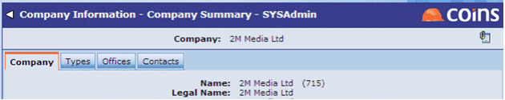
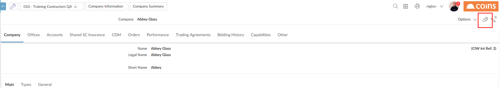
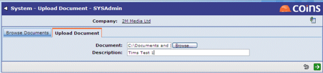
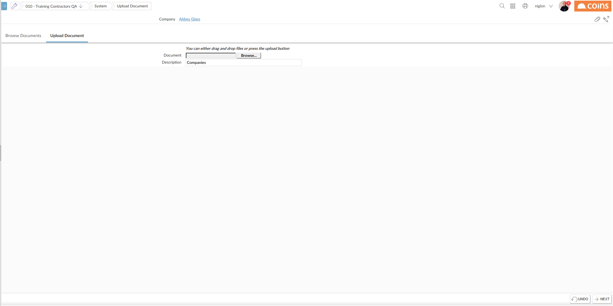
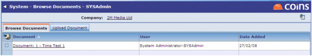
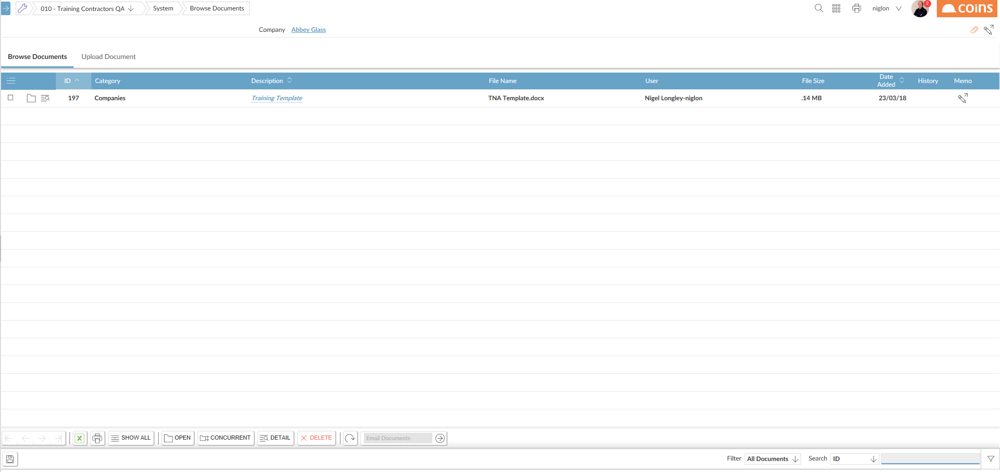
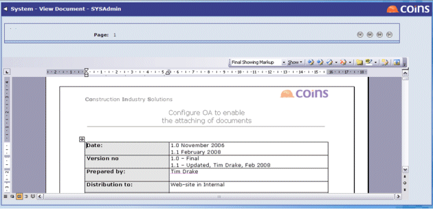
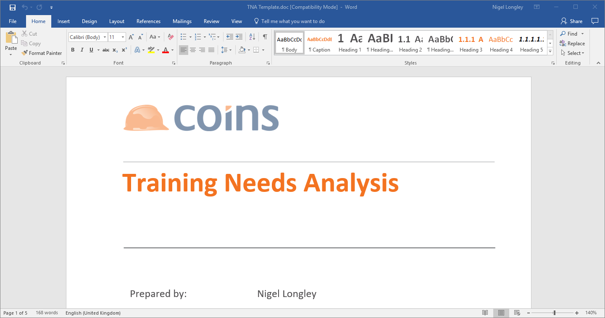

To attach a document:
- Click the Attach Document button (
 - either top right of a detail screen or a column on a browse screen).
- either top right of a detail screen or a column on a browse screen).


NOTE
If there are already documents attached to the record, the button appears as follows: .
. - On the Upload Document tab, browse for a document on your local or network drive.
- Complete the description and click
 .
.


The uploaded document is now displayed in the Browse Documents tab.


- After you have uploaded the document, you can still change the document's description, the document group (if used) and any keywords which do not relate to a field in the
To view an attached document:
- Click
- On the Browse Documents tab, click the link on the document name.
The document is displayed in the relevant application.

